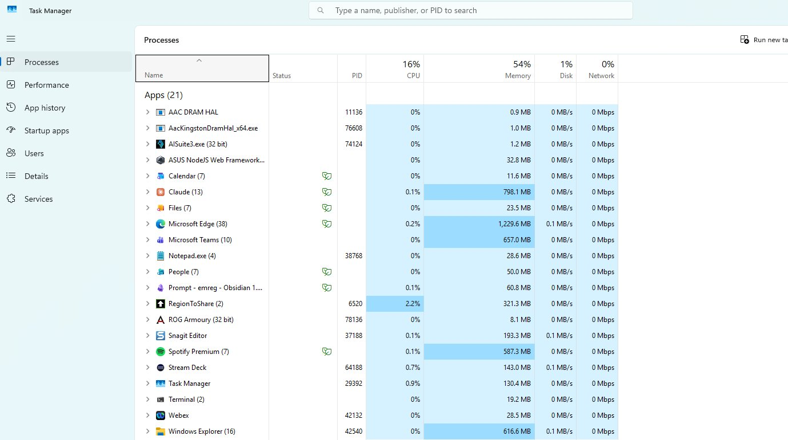

The invisible thing keeping your computer alive — and the trick that makes virtualization possible.
Layer 2 · OS · 10 min
Right now your laptop has YouTube, Discord, Spotify, a game downloading, and a hundred tabs all wanting to run. Your CPU has 8 cores. Who decides which program gets a core, and for how long?
The CPU only speaks one language — about 1,500 instructions burned into the silicon at the factory. Add, move, jump, compare. That's the entire vocabulary. Forever.
int main() { int a = 5; int b = 3; return a + b; }
main:
mov eax, 5
mov ebx, 3
add eax, ebx
ret
Five C lines on the left. Five CPU instructions on the right. The compiler did the translation — turned your code into the chip's vocabulary.
But there's a catch. Programs aren't allowed to touch the hardware directly. Not the screen, not the disk, not the network. They run in a sandbox.
So how does anything get done? The program asks the kernel — through a system call. The kernel checks, the kernel acts, the kernel hands the result back. And the CPU itself enforces the rule — programs physically can't skip the kernel. Stop your heart, you die. Stop the kernel, your computer freezes.
Same compiler, slightly bigger program — hello world. And it explodes.
#include <stdio.h> int main() { printf("Hello, world!\n"); return 0; }
main:
push rbp
mov rbp, rsp
sub rsp, 16
lea rax, [rip+.LC0]
mov rdi, rax
call printf@PLT
... ; ~40 more lines like this
... ; (libc, stack frame, calling convention)
mov eax, 0
leave
ret
And here's the kicker — printf isn't even a system call. It's a library function that eventually calls a real system call:
printf("Hello, world!\n");
write(1, "Hello, world!\n", 14); // ← system call
Your Windows kernel: ~30 MB of compiled code. Chrome: ~180 MB. Cyberpunk 2077: ~80 GB. All instructions like these — just more of them.
Four jobs. Every operating system does these. The kernel sits in the middle of every single one.
| Resource | Role (Layer 1) | What the kernel does |
|---|---|---|
| CPU | The worker | Scheduling — slices CPU time among hundreds of programs |
| RAM | The desk | Memory management — assigns each program its own area |
| Storage | The filing cabinet | File system — every read and write goes through here |
| Network | The phone line | Networking — every packet in or out |

You've all opened this when something froze. This is your computer's EKG — the kernel showing you its work. Every row is a program. Every column is one of the four jobs.
| Configured for you (a human) | Configured for something else |
|---|---|
| GUI on by default | Could run with no screen at all |
| Sleeps when idle | Could stay awake for years |
| One user at a time | Could serve thousands at once |
| Programs run when you double-click | Programs run automatically in the background |
The kernel manages compute. Memory. Storage.
And one more thing — the network connection.
That last one turns out to be bigger than it sounds. Two computers, talking. Layer 3.